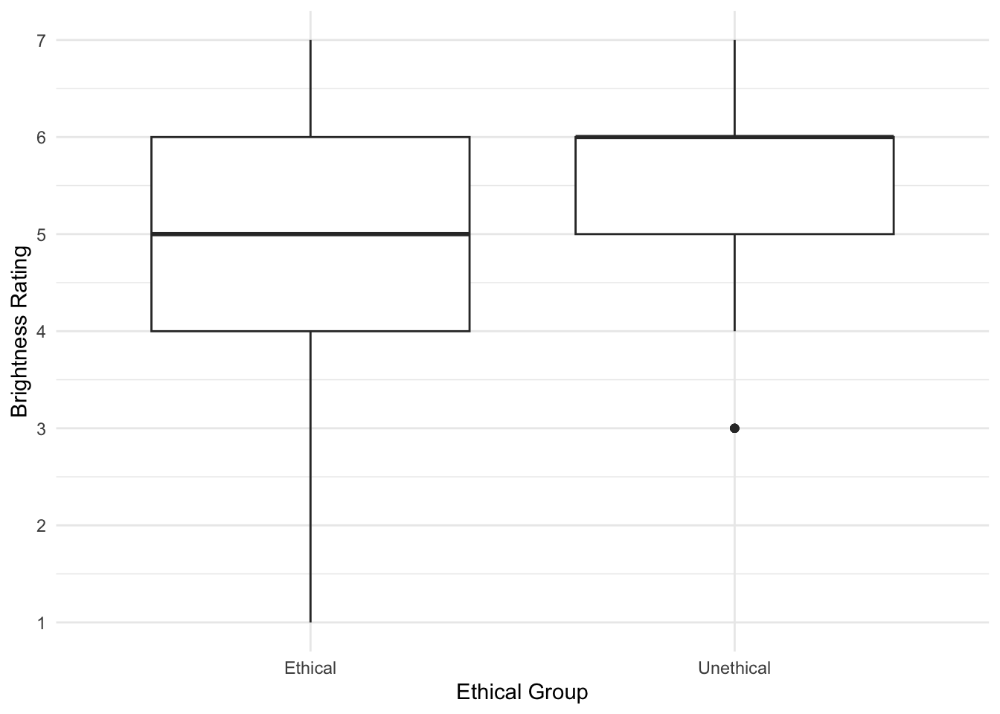
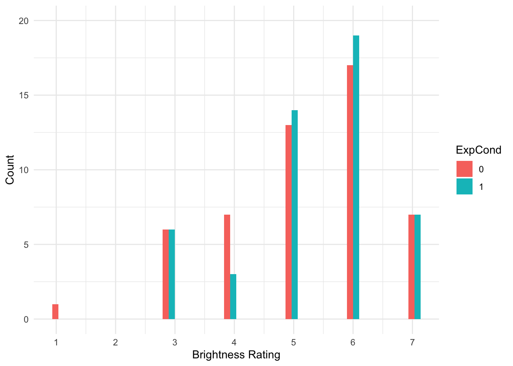
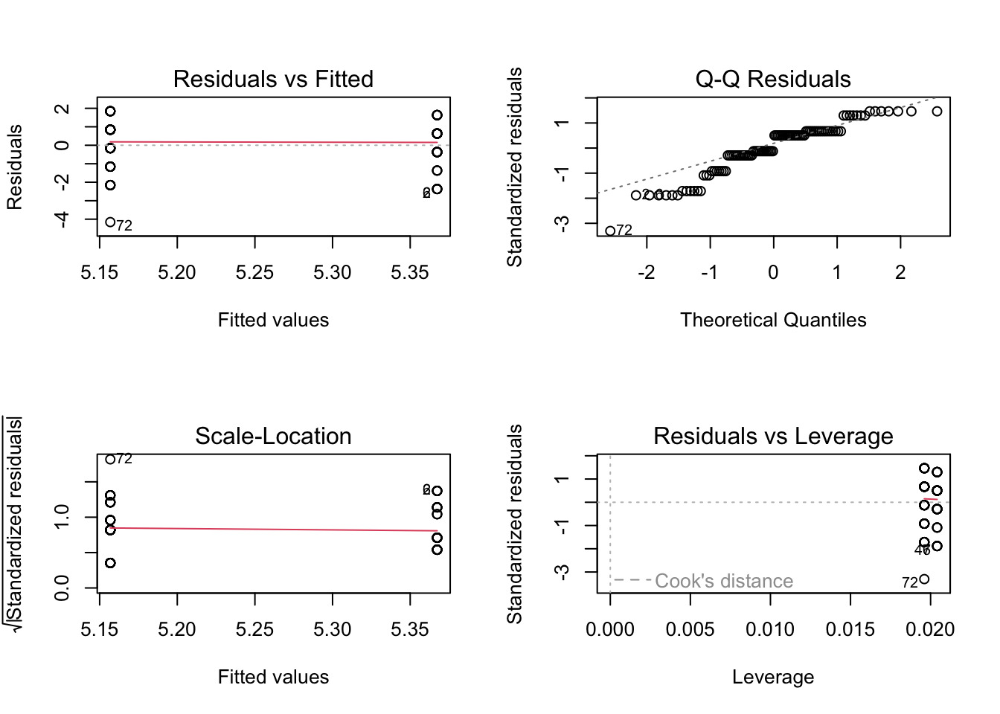
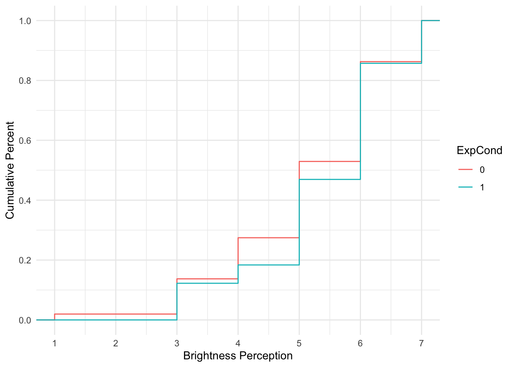
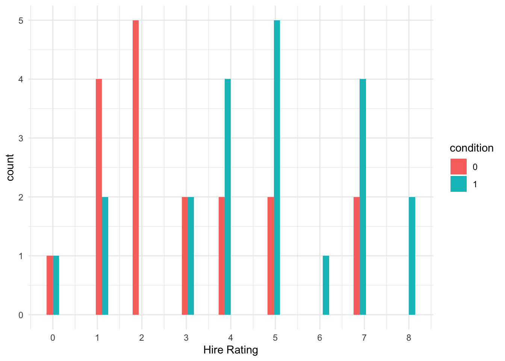
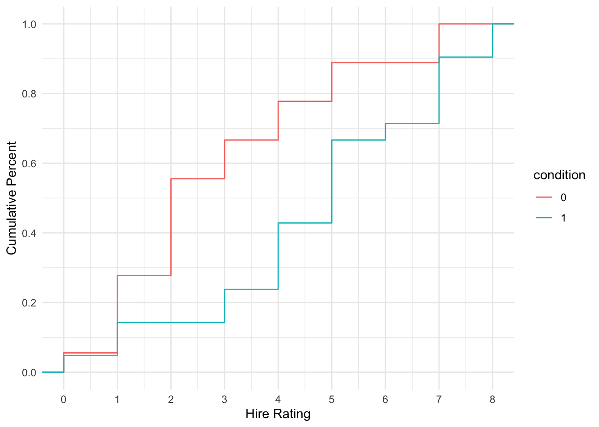

Attaching package: 'glossary'The following object is masked from 'package:webexercises':
add_to_quarto
Attaching package: 'glossary'The following object is masked from 'package:webexercises':
add_to_quartoIn this chapter, we build on simple and multiple linear regression. All the lessons you learnt there still apply for building models with one or more predictors, but sometimes it is not appropriate to assume normality. It is a popular and convenient choice as assuming normality is often robust, but for some outcomes it would simply not be the appropriate choice. Generalised linear models allow you to specify a link and link function for the model residuals, so you can apply a linear model to alternative distributions. In this chapter, we will cover ordinal regression for modeling ordinal outcomes.
Chapter Intended Learning Outcomes (ILOs)
By the end of this chapter, you should be able to:
In this chapter, we need a few different datasets, so we will introduce them as we need them.
Before we can get started, you need to organise your files and project for the chapter, so your working directory is in order.
In your folder for statistics and research design Stats_Research_Design, create a new folder called 06_ordinal. Within 06_ordinal, create two new folders called data and figures.
Create an R Project for 06_ordinal as an existing directory for your chapter folder. This should now be your working directory.
Create a new Quarto document and give it a sensible title describing the chapter, such as 06 Ordinal Regression. Save the file in your 06_ordinal folder.
We are working with a few data sets in this chapter, so please save the following zip file containing all the data files you need: Chapter 05 Data. Right click the link and select “save link as”, or clicking the link will save the file to your Downloads. Extract the files and make sure that you save them as “.csv”. Save or copy the files to your data/ folder within 06_ordinal.
You are now ready to start working on the chapter!
To demonstrate ordinal regression, we will use data from Brandt et al. (2014). The aim of Brandt et al. was to replicate a relatively famous social psychology study (Banerjee et al., 2012) on the effect of recalling unethical behaviour on the perception of brightness.
In common language, unethical behaviour is considered as “dark”, so the original authors designed a priming experiment where participants were randomly allocated to recall an unethical behaviour or an ethical behaviour from their past. Participants then completed a series of measures including their perception of how bright the testing room was. Brandt et al. were sceptical and wanted to replicate this study to see if they could find similar results.
Participants were randomly allocated (ExpCond) to recall an unethical behaviour (1; n = 49) or an ethical behaviour (0; n = 51). The key outcome was their perception of how bright the room was (welllit), from 1 (not bright at all) to 7 (very bright). The research question was: Does recalling unethical behaviour lead people to perceive a room as darker than if they recall ethical behaviour?
As the first activity, try and test yourself by completing the following task list to practice your data wrangling skills. Create a final object called bostyn_data to be consistent with the tasks below. If you just want to focus on fitting the models, then you can just copy the code in the solution.
To wrangle the data, complete the following tasks:
Load the following packages. If you do not have them already, remember you will need to install them first if you are working on your own computer:
You can complete the following tasks individually or combining things in one pipe, you just need a final object called Brandt_data. Read the data file data/Brandt_unlit.csv.
You should have the following in a code chunk:
# wrangling and visualisation functions
library(tidyverse)
# Parameter estimates
library(emmeans)
# Ordinal regression for later
library(ordinal)
# plotting model objects
library(sjPlot)
# Brandt data for ordinal regression
Brandt_data <- read_csv("data/Brandt_unlit.csv") %>%
mutate(ExpCond = as.factor(case_when(ExpCond == 1 ~ 0, # Ethical
ExpCond == -1 ~ 1))) # UnethicalWhen starting any data analysis, it is important to visualise the data for some exploratory data analysis. Using the skills you developed in data skills for reproducible research, you can explore the data to understand its properties and look for potential patterns. We can create a boxplot to get a brief overview of how perceived brightness changes depending on the experimental condition.

There are some signs of the outcome being ordinal, but its not super obvious. We can create a histogram showing the distribution of brightness rating by group, to see how discrete the data are.

That’s much better. Now, we can see the clearly ordinal nature of brightness rating and how participants can only respond on the integer 1-7 scale.
The most important part of data analysis is your role as the decision maker and thinking about what would be the most appropriate choice of modelling. Sometimes, there are equally valid approaches, while other times there is one better suited approach. If you apply an inappropriate test, R will gladly follow your instructions. Its your job to think critically about your modelling approach and check its an appropriate choice.
R will happily let us apply simple linear regression to predict brightness rating (welllit) from the categorical predictor of experimental condition (ExpCond). This is by far the most common approach to tackling ordinal outcomes in psychology, particularly when you take the mean or sum of multiple ordinal items, so it looks a little more continuous. If you meet the other assumptions of linear regression, it can often be a pragmatic and robust approach.
Call:
lm(formula = welllit ~ ExpCond, data = Brandt_data)
Residuals:
Min 1Q Median 3Q Max
-4.1569 -0.3673 0.2379 0.8431 1.8431
Coefficients:
Estimate Std. Error t value Pr(>|t|)
(Intercept) 5.1569 0.1779 28.992 <2e-16 ***
ExpCond1 0.2105 0.2541 0.828 0.409
---
Signif. codes: 0 '***' 0.001 '**' 0.01 '*' 0.05 '.' 0.1 ' ' 1
Residual standard error: 1.27 on 98 degrees of freedom
Multiple R-squared: 0.006953, Adjusted R-squared: -0.00318
F-statistic: 0.6861 on 1 and 98 DF, p-value: 0.4095 2.5 % 97.5 %
(Intercept) 4.8038772 5.5098483
ExpCond1 -0.2937809 0.7147492The intercept suggests the mean brightness rating for participants in the ethical group was 5.16. The coefficient and model are not statistically significant - explaining very little variance in the outcome - and suggests those in the unethical group had a mean increase in brightness rating of 0.21 [-0.29, 0.71].
The first problem comes in the interpretation. As a linear model expecting normally distributed residuals, we get means for the intercept and coefficient, and they could - at least theoretically - be any values. So, we get an average of 5.16 and 5.37 for our two groups, but the scale items could only be integers from 1-7. So, you can question how informative it is to treat these data as interval, when they are only labels for arbitrary numbers ranging from 1 (not bright at all) to 7 (very bright).
The second problem comes in the assumptions of the model. If the means are around the middle of the scale, it can behave approximately normal. If the means are closer to the boundaries, then you start running into problems as the residuals that the model thinks are theoretically boundless, hit a boundary. Let’s look at the checks for this model.

The qq plot in pane 2 of the residuals against the theoretical distribution is key here. Most of the points follow the dashes line, but it shifts away towards the lower boundary. There are also telltale signs of discrete ordinal data as the residuals move in set points. This is because the outcome can only be 1-7, but the theoretical quantiles are boundless.
So, while the assumptions do not look catastrophic, we will explore how we can model the ordinal nature of the outcome better.
Ordinal regression models are a kind of logistic regression model. They are also known as cumulative link or ordered logit models. They work on the same logic as logistic regression where we want to model the probability of a discrete outcome, but instead of only two possible outcomes, ordinal regression models split a scale up into an ordered series of discrete outcomes. Between each scale point, the model estimates the threshold and sees how the outcome shifts across your predictor(s).
To get an idea of cumulative probability, we can plot the Brandt et al. data to see how the cumulative percentage of responses across the scale shifts for each group.

For each group, the lines corresponds with the cumulative percentage at each scale point. When the line is horizontal, there is no change. When the line moves vertically, it represents the next percentage increase, adding to the cumulative percentage from the previous shift, until you reach 100%.
Ordinal regression models estimate these shifts in probability and you get k-1 estimates for the thresholds, meaning you get one fewer estimate than the total number of scale points. Behind the scenes, the model interprets the outcome as a latent variable, meaning the ordinal scale points are tapping into some kind of construct, but honouring there are discrete scale points. We will explore how it models that latent variable shortly.
The coefficient in the model represents the probability shift of a 1 scale point increase from one distribution to another on the scale of your predictors. So, for every 1-unit increase in a continuous predictor, you see how the probability shifts, or how the probability shifts for the difference between two groups in a categorical predictor. A positive slope coefficient would mean an increase along your predictor scale, while a negative slope coefficient would mean a decrease along your predictor scale.
There are two ways of modelling this process depending on the link function. The default in the
We will fit ordinal regression models using the
[1] "1" "3" "4" "5" "6" "7"We can see here the scale points are in ascending order as we want them to be, and no one in the data ever responded 2. Next, we can fit our ordinal regression model using the same format as all our regression models. By default, the function uses a logit link, but we will specify it as an argument to make it clearer how things change for a probit link later.
formula: WellLitFactor ~ ExpCond
data: Brandt_data
link threshold nobs logLik AIC niter max.grad cond.H
logit flexible 100 -152.47 316.94 6(0) 1.10e-07 6.9e+01
Coefficients:
Estimate Std. Error z value Pr(>|z|)
ExpCond1 0.2594 0.3606 0.719 0.472
Threshold coefficients:
Estimate Std. Error z value
1|3 -4.4751 1.0181 -4.395
3|4 -1.7798 0.3403 -5.231
4|5 -1.0845 0.2921 -3.713
5|6 0.1309 0.2703 0.484
6|7 1.9504 0.3460 5.637 2.5 % 97.5 %
ExpCond1 -0.4465061 0.9702407In the first segment of the output, its somewhat similar to the other models we have fitted, but there is no intercept at the top. We just have the slope coefficients for each predictor (one in this case), then the threshold coefficients for k-1 scale points.
As this is an adapted version of logistic regression with a logit link, the units are in log odds. So, they are easier to interpret as an odds ratio by taking the exponential.
ExpCond1
1.296112 2.5 % 97.5 %
ExpCond1 0.6398599 2.63858The results correspond with what we plotted previously, we have an odds ratio of 1.30 [0.64, 2.64], meaning there are 1.3 higher odds of a brighter rating in the unethical condition compared to the ethical condition. However, the confidence interval is pretty wide here and the p-value is not statistically significant, so we cannot conclude there is a shift in probability between the two groups here.
We would normally focus on the coefficient as the main outcome of the modelling, but we can also break down the threshold coefficients so they are not a mystery. These represent the estimates for the cumulative probability of choosing a given scale point. These relate to the reference group, so we see the cumulative probability of the ethical condition. Remember, these are still in log odds, so we can calculate the probability like we did for logistic regression by dividing the odds ratio by 1 plus the odds ratio.
The code below uses coef() function and subsetting (the [1]etc.) to avoid writing out the numbers manually and reduce copy and paste errors. Try coef(brandt_model2) in the console to see the coefficients it returns.
1|3
0.01126058 3|4
0.1443283 4|5
0.2526636 5|6
0.5326661 6|7
0.8754855 This means choosing less than 3 (remember no one responded 2) represents .011 or 1.12%. Choosing less than 4 represents .144 or 14.4%, and so on. Once we get to the final threshold, this represents less than 7 at .875/87.5%. The cumulative probability of 7 or less is then 1/100%, which is why you get k-1 thresholds. So, you can work that final step out as 1 - .875 = .125/12.5%.
These cumulative percentage estimates are for the reference group (ethical), so you could calculate the estimate for the unethical group by subtracting the slope coefficient (0.2594) from each threshold. This might sound unintuitive at first (because it is…) as you normally add the intercept and slope to calculate the target group, but here we are working with cumulative probabilities. This means we need to subtract the two to calculate the estimates for the unethical group as our target. For example, for the first threshold:
1|3
0.008710377 As before, we are using the coef() function and subsetting (the [1]etc.) to avoid writing out the numbers manually and reduce copy and paste errors. This time, we are using two coefficients to subtract the slope coefficient from each threshold coefficient. So, if you apply this to a new data set, make sure you check how many coefficients there are to subset them accurately.
This means the cumulative probability estimate for less than 3 is .0087 or 0.87% in the unethical group.
Like previous models, once you have worked through the logic manually, you can use the functions to give you all the information at once. We can use emmeans() to give us the predicted probability for each scale point by the two groups.
ExpCond = 0:
WellLitFactor prob SE df asymp.LCL asymp.UCL
1 0.01126 0.01134 Inf -0.01096 0.0335
3 0.13307 0.04009 Inf 0.05450 0.2116
4 0.10834 0.03425 Inf 0.04121 0.1755
5 0.28000 0.04736 Inf 0.18717 0.3728
6 0.34282 0.05298 Inf 0.23899 0.4467
7 0.12451 0.03771 Inf 0.05060 0.1984
ExpCond = 1:
WellLitFactor prob SE df asymp.LCL asymp.UCL
1 0.00871 0.00885 Inf -0.00863 0.0260
3 0.10644 0.03449 Inf 0.03884 0.1740
4 0.09173 0.03005 Inf 0.03283 0.1506
5 0.26103 0.04549 Inf 0.17187 0.3502
6 0.37644 0.05385 Inf 0.27089 0.4820
7 0.15565 0.04397 Inf 0.06947 0.2418
Confidence level used: 0.95 Now, we can see all of the values we have manually calculated for each group. For example, the value we just calculated for unethical less than 3 is the first entry: 0.009. Just keep in mind this provides the predicted probability at each rating level, you would need to calculate the cumulative probability yourself.
The default option in flexible thresholds between scale points. This estimates a coefficient for threshold and makes the fewest assumptions about the outcome. Alternative options are equidistant which assume evenly spaced scale points, or symmetric which assume scale points are evenly spaced above and below the scale center. These two make stronger assumptions about the outcome but require fewer parameters, so you would need to think carefully about whether they would suit the outcome you are modelling.
To see how the equidistant option would compare:
formula: WellLitFactor ~ ExpCond
data: Brandt_data
link threshold nobs logLik AIC niter max.grad cond.H
logit equidistant 100 -158.95 323.90 5(0) 7.75e-11 8.3e+01
Coefficients:
Estimate Std. Error z value Pr(>|z|)
ExpCond1 0.2728 0.3583 0.761 0.447
Threshold coefficients:
Estimate Std. Error z value
threshold.1 -3.7721 0.4394 -8.585
spacing 1.3626 0.1280 10.647This time, you only get one threshold estimate and a spacing parameter. Instead of calculating the cumulative probability at each threshold, you must successively add them together:
threshold.1
0.02248644 threshold.1
0.08245417 Finally, we can explore the flexible threshold cumulative link model with a probit link. Instead of modelling the outcome with a standard logistic distribution and interpret the units in log odds, we model the outcome with a standard normal distribution and interpret the units in z-scores or standard deviations.
formula: WellLitFactor ~ ExpCond
data: Brandt_data
link threshold nobs logLik AIC niter max.grad cond.H
probit flexible 100 -152.46 316.93 6(0) 1.20e-13 3.3e+01
Coefficients:
Estimate Std. Error z value Pr(>|z|)
ExpCond1 0.1532 0.2096 0.731 0.465
Threshold coefficients:
Estimate Std. Error z value
1|3 -2.26269 0.38615 -5.860
3|4 -1.05529 0.18651 -5.658
4|5 -0.66631 0.17054 -3.907
5|6 0.07626 0.16309 0.468
6|7 1.15814 0.18901 6.128 2.5 % 97.5 %
ExpCond1 -0.2574905 0.5643664We can see here that the output and structure is almost identical, but the estimates are slightly different and it confirms we used probit as the link function. Instead of working with log odds, the estimates represents z-score or standard deviation changes for a 1-unit change. The effect of the experimental condition is still non-significant, but this time the unethical condition is associated with a 0.15 (95% CI = [-0.26, 0.56]) standard deviation increase in brightness rating compared to the ethical condition.
Now you have followed along to a guided example, it is important you can transfer your knowledge to a new scenario. So, we have a new data set for you to try out your understanding of these techniques on. Follow the instructions below and answer the questions. The solution is there to check your answers against, but make sure you try the activities independently first.
For an independent activity, we will use data from Schroeder & Epley (2015). The aim of the study was to investigate whether delivering a short speech to a potential employer would be more effective at landing you a job than writing the speech down and the employer reading it themselves. Thirty-nine professional recruiters were randomly assigned to receive a job application speech as either a transcript for them to read, or an audio recording of the applicant reading the speech.
The recruiters then rated the applicants on perceived intellect, their impression of the applicant, and whether they would recommend hiring the candidate. All ratings were originally on a rating scale ranging from 0 (low intellect, impression etc.) to 10 (high impression, recommendation etc.), with the final value representing the mean across several items.
For this example, we will focus on the hire rating (variable Hire_Rating to see whether the audio condition had a would lead to higher ratings than the transcript condition (variable CONDITION).
From here, apply what you learnt in the guided example for ordinal regression to this new independent task and complete the questions below to check your understanding. Remember you will need to treat the outcome as a factor to fit the ordinal model. The answers are based on the default approach for estimating flexible thresholds.
The experimental condition is a and predictor of hire rating.
Rounding to two decimals, the slope coefficient converted to an odds ratio is [lower 95% CI = , upper 95% CI = ].
This suggests there are higher odds of a larger hire rating in the condition compared to the condition.
Rounding to three decimals, the estimated cumulative probability for the transcript group choosing a hire rating of lower than 3 (hint: coefficient 3) is and the cumulative probability for the audio group choosing a hire rating of lower than 3 (hint: coefficient 3 minus coefficient 9) is .
First, we need to convert hire rating to a factor for the ordinal model to work.
We can explore the distribution of the two groups and see there is a clearer difference here, with more low ratings in the transcript (0) group and more high ratings in the audio (1) group.

Alternatively, we can visualise the cumulative probability and see how it climbs steeper for the transcript group (more lower responses) and shallow for the audio group (more higher responses).

Finally, we can fit our ordinal regression model and see the slope coefficient is positive and it is statistically significant.
formula: hire_factor ~ condition
data: schroeder_data
link threshold nobs logLik AIC niter max.grad cond.H
logit flexible 39 -77.29 172.59 7(1) 5.69e-10 1.6e+02
Coefficients:
Estimate Std. Error z value Pr(>|z|)
condition1 1.5409 0.6146 2.507 0.0122 *
---
Signif. codes: 0 '***' 0.001 '**' 0.01 '*' 0.05 '.' 0.1 ' ' 1
Threshold coefficients:
Estimate Std. Error z value
0|1 -2.364790 0.754794 -3.133
1|2 -0.761366 0.459091 -1.658
2|3 -0.009953 0.437700 -0.023
3|4 0.526688 0.459758 1.146
4|5 1.262387 0.504261 2.503
5|6 2.197283 0.575101 3.821
6|7 2.357000 0.589496 3.998
7|8 3.976969 0.861277 4.618 2.5 % 97.5 %
condition1 0.3669235 2.791582To be easier to interpret, we can convert the log odds to the odds ratio by taking the exponential for the slope coefficient and its 95% confidence interval.
condition1
4.668953 2.5 % 97.5 %
condition1 1.443288 16.3068Finally, as a demonstration, we can calculate the estimated cumulative probability of choosing a rating of less than 3 (0-2) for the transcript group and the audio group. Note we are using coefficient 3 as that is the third threshold. We then subtract coefficient 9 as the slope coefficient is added on to the end.
2|3
0.4975119 2|3
0.1749581